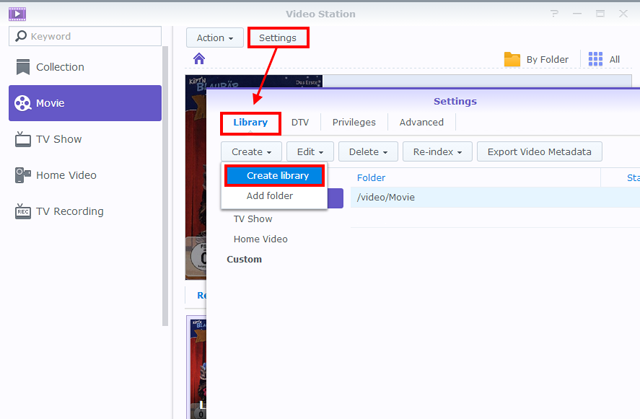

개요
Video Station을 사용하면 원하는 비디오를 훨씬 효율적으로 찾을 수 있도록 여러 비디오 컬렉션을 서로 다른 기본 또는 사용자 지정 라이브러리에 쉽게 정리하고 분류할 수 있습니다. 또한 몇 번만 클릭하면 되는 것처럼 쉽고 간단하게 비디오를 재생하고 공유할 수 있습니다.
1. Video Station 설치
Video Station을 설치하려면 패키지 센터로 이동하고 Video Station을 찾은 다음 설치를 클릭합니다.

2. 비디오를 기본 라이브러리에 저장 및 분류
Video Station에서는 왼쪽 패널에 표시된 대로 동영상, TV 쇼 및 홈 비디오와 같은 세 개의 기본 라이브러리를 제공합니다. 비디오가 올바르게 색인이 지정되고 분류되도록 하려면 먼저 각 라이브러리에 대한 비디오 폴더를 추가한 다음 해당 비디오 폴더에 파일을 저장해야 합니다. 기본적으로 video 공유 폴더 아래에 세 개의 기본 라이브러리를 위한 세 개의 비디오 폴더가 생성됩니다: 동영상, TV 쇼 및 홈 비디오. 그러나 이러한 세 가지 폴더 이외에 다음을 수행하여 라이브러리에 대한 비디오 폴더를 더 추가할 수도 있습니다.
시스템이 인터넷에서 두 가지 비디오 유형(동영상 및 TV 쇼)에 대한 관련 메타데이터와 기타 정보(예: 포스터 이미지)를 자동으로 검색합니다. 따라서 비디오가 올바른 정보와 페어링되도록 하려면 비디오가 각 라이브러리의 지정된 비디오 유형과 일치하는 것이 좋습니다.
기본 라이브러리의 비디오 폴더 추가
- 설정 > 라이브러리로 이동합니다.
- 생성 > 폴더 추가를 클릭하여 Synology NAS에서 폴더를 선택하고 대상 라이브러리를 선택합니다. 하나의 라이브러리에 대해 최대 100개의 비디오 폴더를 추가할 수 있지만, 폴더가 선택되면 다른 라이브러리에 대해 해당 폴더와 하위 폴더를 더 이상 선택할 수 없습니다.
- 비디오 파일을 비디오 폴더에 저장하여 비디오를 해당 라이브러리로 분류합니다.
- 이제 라이브러리에서 원하는 비디오를 검색하고 시청할 수 있습니다.


3. 비디오를 사용자 지정 라이브러리에 저장 및 분류
기본적으로 누구나 액세스할 수 있는 세 개의 기본 라이브러리 외에도, DSM admin 또는 administrators 그룹에 속한 사용자는 사용자 지정 라이브러리를 생성하고 사용자에게 액세스 권한을 할당할 수 있습니다.
3.1 사용자 지정 라이브러리 생성
- 설정 > 라이브러리로 이동하여 생성 > 라이브러리 생성을 클릭합니다. 
- 새 라이브러리의 이름을 지정하고, 폴더에 저장할 비디오 유형을 선택한 다음 누구나 라이브러리에 액세스할 수 있도록 하려면 공용을 선택하고 권한이 있는 특정 사용자로 액세스를 제한하려면 비공개를 선택합니다. 인터넷에서 정확한 비디오 정보가 수집되도록 폴더에 저장하는 비디오가 여기에 선택된 유형과 일치해야 한다는 점에 유의하십시오.
- 비공개를 선택하는 경우 권한 할당을 클릭하고 선택 상자를 선택하여 사용자에게 액세스 권한을 부여합니다.
3.2 사용자 지정 라이브러리의 비디오 폴더 추가
- 설정 > 라이브러리로 이동합니다.
- 생성 > 폴더 추가를 클릭하여 Synology NAS에서 폴더를 선택하고 대상 라이브러리를 선택합니다. 하나의 라이브러리에 최대 100개의 비디오 폴더를 추가할 수 있지만, 폴더가 선택되면 다른 라이브러리에 대해 해당 폴더와 하위 폴더를 더 이상 선택할 수 없습니다.
- 비디오 파일을 비디오 폴더에 저장하여 비디오를 해당 라이브러리로 분류합니다.
- 이제 라이브러리에서 원하는 비디오를 검색하고 시청할 수 있습니다.
4. 비디오 재생
비디오 파일을 서로 다른 라이브러리로 분류한 후 아래의 단계를 수행하여 Video Station에서 비디오를 재생할 수 있습니다. 먼저 컴퓨터에 VLC 미디어 플레이어(Windows, Linux)를 설치하는 것이 좋습니다. 로컬 컴퓨터에서 비디오를 재생할 수 있을 뿐만 아니라, 비디오를 DLNA/UPnP 호환 DMA 또는 AirPlay 호환 가능 장치에 스트리밍하여 재생할 수도 있습니다.
내장된 비디오 플레이어로 비디오 재생
- 재생할 비디오 클립을 선택한 다음 비디오 이미지에서 재생 아이콘을 클릭하거나 작업 > 재생을 클릭합니다.
- 이 때 비디오가 즉시 재생되어야 합니다. 재생되지 않는 경우 웹 브라우저에서 해당 비디오 형식을 지원하는지 또는 컴퓨터에 VLC 플러그인을 설치했는지 확인하십시오.
- 필요에 따라 비디오 플레이어의 맨 아래에 있는 진행률 표시줄 및 화면 단추를 사용합니다. 또한 볼륨을 조절하거나, 비디오 재생 품질과 오디오 트랙을 선택하거나, 자막을 켜거나, 비디오를 다른 장치(해당하는 경우)로 스트리밍할 수 있습니다.


VLC 플러그인 및 지원되는 장치에 대한 자세한 정보는 DSM 도움말 > Video Station > 비디오 재생을 참조하십시오.
5. 공용으로 비디오 공유
공용 공유 기능을 사용하면 Video Station을 사용하여 비디오를 다른 사람과 손쉽게 공유할 수 있습니다. 링크가 있는 모든 사람이 공유된 모든 비디오에 공개적으로 액세스하고 컬렉션 페이지에서 관리할 수 있습니다.
다른 사람과 비디오 공유
- 비디오 라이브러리로 이동하고 오른쪽 상단에 있는 모두를 클릭하여 이 라이브러리에 있는 비디오를 모두 봅니다.
- 선택 모드 아이콘을 클릭하거나 Ctrl 또는 Shift를 길게 눌러 비디오를 여러 개 선택합니다. 작업 > 공용으로 공유를 클릭합니다.
- 공유할 비디오를 하나만 선택하면 해당 비디오가 공유된 비디오라는 공유 컬렉션에 추가됩니다. 여기에서 공유된 모든 비디오를 하나씩 관리할 수 있습니다.
- 공유할 비디오를 여러 개 선택하면 해당 비디오들이 새 공유 컬렉션으로 그룹화됩니다.
- 또는 작업 > 컬렉션을 클릭하여 선택한 비디오를 기존 공유 컬렉션(해당하는 경우)에 추가할 수도 있습니다.
- 필요하면 유효 기간을 지정합니다.
- 링크를 이메일, 인스턴트 메시지 및 웹 페이지에 복사하여 붙여넣어 해당 비디오를 모든 사람과 공유합니다.

6. 모바일 장치에서 비디오 정리 및 시청
모바일 장치를 통해 Video Station에 연결하려면, QR 코드를 사용해 iOS/Android 장치 또는 Windows Phone에 DS video를 다운로드하여 모바일 장치에서 비디오를 재생하고 컬렉션을 구성하거나 집에서나 이동 중에도 DMA 또는 AirPlay 장치로 비디오를 스트리밍할 수 있습니다.